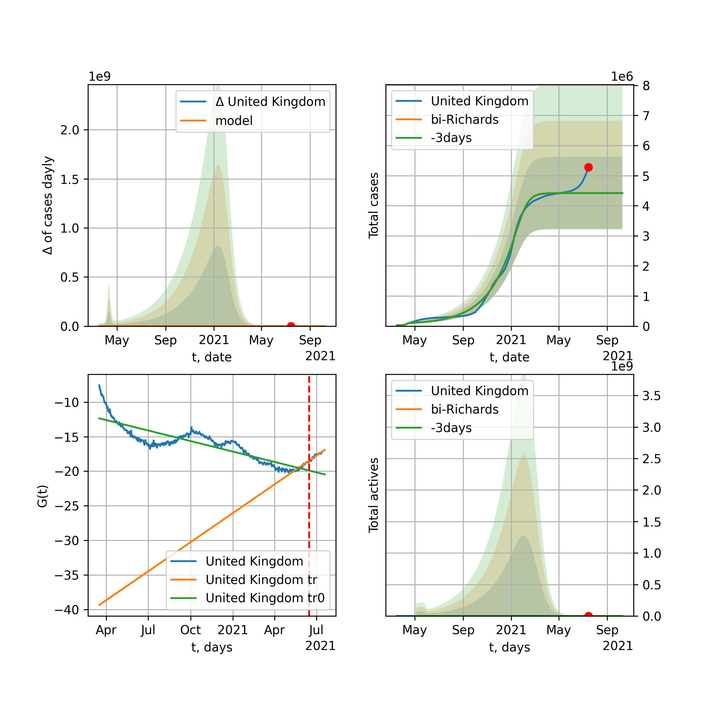
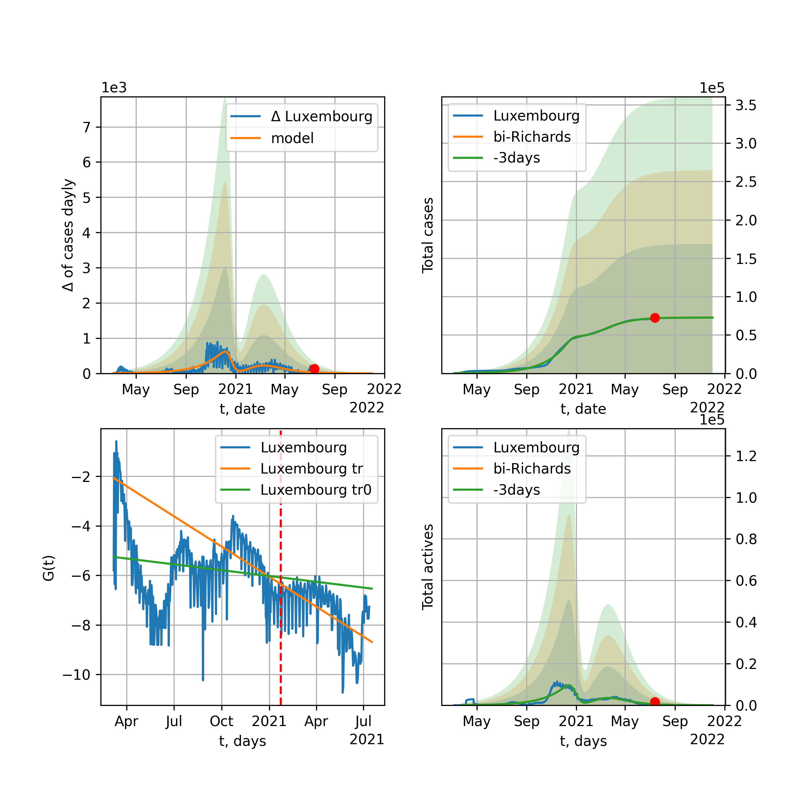
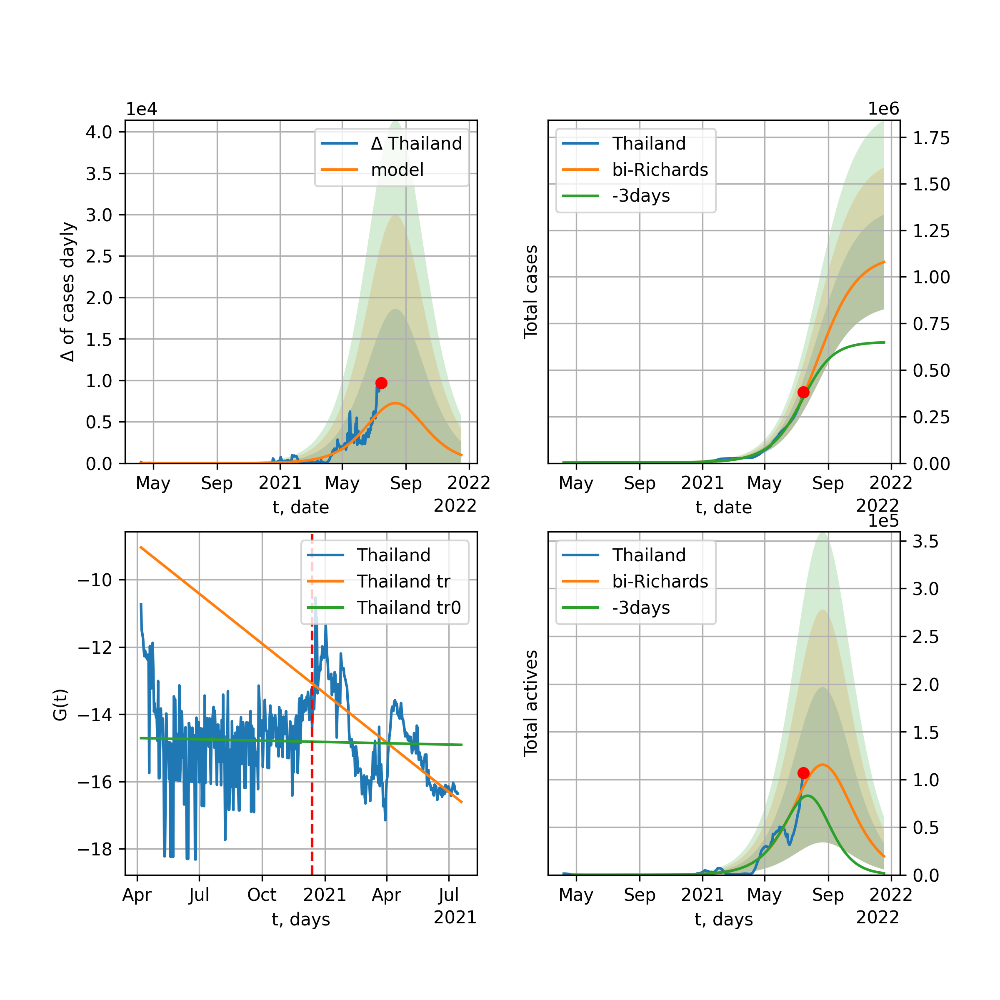

Multi-logistic model of COVID-19 dynamics
Model, code, results
Project maintained by algmaknick Hosted on GitHub Pages — Theme by mattgraham
World

World data at: 2020-06-20
+3 day model MAPE: 0.011815
model: bi-Richards
coeffs: [ 1.14459952e+07 1.77958744e+00 -4.04431815e+01 1.69789257e-02]
S.Korea scenario coeffs: [0.36242246, 2.56241634, 1.84890887, 0.13324732]
rational stdev: 0.082811
forecast at the end of period: +546 days
deltaDaycases: 9156
total cases: 19674461 ± 1629254
total death: 1028703 ± 255562
bi-Richards approximation splitting point: 50
trend coefficient of determination: 0.842139
intercept: -2.317104
slope: -0.033533
trend coefficient of determination: 0.355133
intercept: -3.791796
slope: -0.005892
European Union

European Union data at: 2020-06-20
+3 day model MAPE: 0.004379
model: bi-Richards
coeffs: [ 2.25879818e+05 4.50989566e+00 -3.24229069e+01 9.16947002e-03]
rational stdev: 0.590398
forecast at the end of period: +28 days
deltaDaycases: 1007
total cases: 1283117 ± 757549
total death: 136194 ± 241225
bi-Richards approximation splitting point: 83
trend coefficient of determination: 0.943413
intercept: -1.112282
slope: -0.057406
trend coefficient of determination: 0.011356
intercept: -5.545522
slope: -0.003372
Brazil

Brazil data at: 2020-06-20
+3 day model MAPE: 0.023212
model: Richards
coeffs: [2.15760247e+06 8.48557407e-02 7.62020566e+01 5.34206410e-01]
S.Korea scenario coeffs: [0.36242246, 2.56241634, 1.84890887, 0.13324732]
rational stdev: 0.291903
forecast at the end of period: +476 days
deltaDaycases: 222
total cases: 2925149 ± 853859
total death: 136830 ± 119823
trend coefficient of determination: 0.785016
intercept: -5.630323
slope: -0.057960
Russia

Russia data at: 2020-06-20
+3 day model MAPE: 0.010086
model: Richards
coeffs: [ 7.48542398e+05 2.49122395e+00 -6.08372847e+01 1.51318199e-02]
S.Korea scenario coeffs: [0.36242246, 2.56241634, 1.84890887, 0.13324732]
rational stdev: 0.103896
forecast at the end of period: +546 days
deltaDaycases: 119
total cases: 1010478 ± 104984
total death: 14017 ± 4368
trend coefficient of determination: 0.969289
intercept: -1.531192
slope: -0.033710
USA

USA data at: 2020-06-20
+3 day model MAPE: 0.012397
model: bi-Richards
coeffs: [ 1.49453044e+06 3.23397525e+00 -3.98579412e+01 1.09011703e-02]
rational stdev: 0.180874
forecast at the end of period: +140 days
deltaDaycases: 282
total cases: 3099970 ± 560705
total death: 162249 ± 88040
bi-Richards approximation splitting point: 65
trend coefficient of determination: 0.952391
intercept: -1.115141
slope: -0.050885
trend coefficient of determination: 0.381902
intercept: -3.699595
slope: -0.009849
Spain

Spain data at: 2020-06-20
+3 day model MAPE: 0.000655
model: Richards
coeffs: [ 2.93918378e+05 9.51468716e+00 -5.45020308e+01 6.36810987e-03]
S.Korea scenario coeffs: [0.36242246, 2.56241634, 1.84890887, 0.13324732]
rational stdev: 0.235243
forecast at the end of period: +266 days
deltaDaycases: 136
total cases: 393710 ± 92617
total death: 38054 ± 26855
trend coefficient of determination: 0.961701
intercept: -0.763318
slope: -0.059376
Italy

Italy data at: 2020-06-20
+3 day model MAPE: 0.000000
model: bi-Richards
coeffs: [-471.0939831 -5.72464529 59.63419296 0.47846907]
S.Korea scenario coeffs: [0.36242246, 2.56241634, 1.84890887, 0.13324732]
rational stdev: 1.517705
forecast at the end of period: +28 days
deltaDaycases: 18
total cases: 235970 ± 358133
total death: 34275 ± 156058
bi-Richards approximation splitting point: 98
trend coefficient of determination: 0.958707
intercept: -5.123245
slope: -0.081006
trend coefficient of determination: 0.001125
intercept: -12.854496
slope: 0.001627
United Kingdom

United Kingdom data at: 2020-06-20
+3 day model MAPE: 0.001530
model: Richards
coeffs: [ 3.19064633e+05 3.86526026e+00 -6.28773644e+01 1.18906351e-02]
S.Korea scenario coeffs: [0.36242246, 2.56241634, 1.84890887, 0.13324732]
rational stdev: 0.143405
forecast at the end of period: +336 days
deltaDaycases: 191
total cases: 421869 ± 60498
total death: 59275 ± 25501
trend coefficient of determination: 0.974382
intercept: -1.421146
slope: -0.044446
France

France data at: 2020-06-20
+3 day model MAPE: 0.002587
model: bi-Richards
coeffs: [2.18377536e+04 5.77945117e+00 1.99274160e+01 1.18037185e-02]
rational stdev: 0.185128
forecast at the end of period: +28 days
deltaDaycases: 60
total cases: 163816 ± 30327
total death: 30322 ± 16840
bi-Richards approximation splitting point: 82
trend coefficient of determination: 0.893504
intercept: -0.859514
slope: -0.068428
trend coefficient of determination: 0.043744
intercept: -7.617645
slope: 0.015871
Germany

Germany data at: 2020-06-20
+3 day model MAPE: 0.006285
model: bi-Richards
coeffs: [1.37841484e+04 1.34190496e+01 1.38675318e+00 5.22275723e-03]
rational stdev: 0.136970
forecast at the end of period: +42 days
deltaDaycases: 12
total cases: 192716 ± 26396
total death: 9031 ± 3710
bi-Richards approximation splitting point: 94
trend coefficient of determination: 0.950737
intercept: -1.412454
slope: -0.061082
trend coefficient of determination: 0.512617
intercept: -18.992400
slope: 0.128358
Turkey

Turkey data at: 2020-06-20
+3 day model MAPE: 0.008317
model: bi-Richards
coeffs: [ 7.41653583e+04 4.47973794e+00 -1.73290113e+01 9.26762397e-03]
rational stdev: 0.205496
forecast at the end of period: +42 days
deltaDaycases: 485
total cases: 222795 ± 45783
total death: 5886 ± 3628
bi-Richards approximation splitting point: 75
trend coefficient of determination: 0.776848
intercept: -0.966312
slope: -0.057925
trend coefficient of determination: 0.205786
intercept: -6.073541
slope: 0.010161
Iran

Iran data at: 2020-06-20
+3 day model MAPE: 0.006571
model: bi-Richards
coeffs: [1.54305151e+05 3.40754515e+00 1.94469563e+00 1.34022673e-02]
S.Korea scenario coeffs: [0.36242246, 2.56241634, 1.84890887, 0.13324732]
rational stdev: 0.272608
forecast at the end of period: +420 days
deltaDaycases: 108
total cases: 305240 ± 83211
total death: 14324 ± 11714
bi-Richards approximation splitting point: 75
trend coefficient of determination: 0.949245
intercept: -0.926506
slope: -0.055322
trend coefficient of determination: 0.135812
intercept: -3.924007
slope: -0.004446
Canada

Canada data at: 2020-06-20
+3 day model MAPE: 0.000549
model: Richards
coeffs: [ 1.10067783e+05 3.68878196e+00 -7.48062506e+01 1.14347897e-02]
S.Korea scenario coeffs: [0.36242246, 2.56241634, 1.84890887, 0.13324732]
rational stdev: 0.162106
forecast at the end of period: +420 days
deltaDaycases: 31
total cases: 147717 ± 23945
total death: 12297 ± 5980
trend coefficient of determination: 0.979899
intercept: -1.564717
slope: -0.044174
South Africa

South Africa data at: 2020-06-20
+3 day model MAPE: 0.004100
model: bi-Richards
coeffs: [3.62690606e+06 1.07924124e-01 8.73169106e+01 1.61850056e-01]
rational stdev: 0.273735
forecast at the end of period: +434 days
deltaDaycases: 163
total cases: 3619037 ± 990658
total death: 73293 ± 60188
bi-Richards approximation splitting point: 30
trend coefficient of determination: 0.533604
intercept: -1.243697
slope: -0.110878
trend coefficient of determination: 0.182213
intercept: -4.106584
slope: -0.006169
Belgium

Belgium data at: 2020-06-20
+3 day model MAPE: 0.001869
model: Richards
coeffs: [ 6.00974381e+04 6.16103581e+00 -4.54238128e+01 1.06328037e-02]
S.Korea scenario coeffs: [0.36242246, 2.56241634, 1.84890887, 0.13324732]
rational stdev: 0.510442
forecast at the end of period: +252 days
deltaDaycases: 20
total cases: 80962 ± 41326
total death: 12964 ± 19852
trend coefficient of determination: 0.959073
intercept: -1.301727
slope: -0.055303
Peru

Peru data at: 2020-06-20
+3 day model MAPE: 0.015797
model: Richards
coeffs: [4.09992354e+05 1.48431045e-01 4.16769037e+01 2.51402109e-01]
S.Korea scenario coeffs: [0.36242246, 2.56241634, 1.84890887, 0.13324732]
rational stdev: 0.329290
forecast at the end of period: +756 days
deltaDaycases: 2
total cases: 558357 ± 183861
total death: 17463 ± 17251
trend coefficient of determination: 0.891589
intercept: -2.635889
slope: -0.047628
Netherlands

Netherlands data at: 2020-06-20
+3 day model MAPE: 0.001007
model: bi-Richards
coeffs: [4.96821254e+03 5.65878422e+00 3.80841836e+01 1.40413780e-02]
rational stdev: 0.133508
forecast at the end of period: +28 days
deltaDaycases: 17
total cases: 51080 ± 6819
total death: 6283 ± 2516
bi-Richards approximation splitting point: 75
trend coefficient of determination: 0.961285
intercept: -0.841889
slope: -0.062347
trend coefficient of determination: 0.177269
intercept: -4.759475
slope: -0.011697
India

India data at: 2020-06-20
+3 day model MAPE: 0.003872
model: Richards
coeffs: [ 3.38196707e+06 2.61005607e-01 -1.21588494e+01 6.38335721e-02]
S.Korea scenario coeffs: [0.36242246, 2.56241634, 1.84890887, 0.13324732]
rational stdev: 0.364821
forecast at the end of period: +1036 days
deltaDaycases: 941
total cases: 4428762 ± 1615703
total death: 142733 ± 156215
trend coefficient of determination: 0.721262
intercept: -1.959142
slope: -0.022043
Switzerland

Switzerland data at: 2020-06-20
+3 day model MAPE: 0.001437
model: logisticQ
coeffs: [ 3.04872509e+04 5.56032799e-07 2.63079287e+01 -2.49759057e+05]
rational stdev: 0.313105
forecast at the end of period: +56 days
deltaDaycases: 0
total cases: 30487 ± 9545
total death: 1908 ± 1792
trend coefficient of determination: 0.981094
intercept_: -4.193663531242498
coeffs_: [ 0. -0.28358836 0.0014684 ]
Ecuador

Ecuador data at: 2020-06-19
+3 day model MAPE: 0.010493
model: Richards
coeffs: [ 5.91405077e+04 2.84733877e+00 -8.32363391e+01 1.14061101e-02]
S.Korea scenario coeffs: [0.36242246, 2.56241634, 1.84890887, 0.13324732]
rational stdev: 0.339866
forecast at the end of period: +617 days
deltaDaycases: 9
total cases: 79719 ± 27093
total death: 6662 ± 6792
trend coefficient of determination: 0.193254
intercept: -2.232368
slope: -0.032278
Portugal

Portugal data at: 2020-06-20
+3 day model MAPE: 0.003275
model: bi-Richards
coeffs: [ 2.68882922e+04 1.59284890e+00 -3.32335594e+01 1.99472034e-02]
rational stdev: 0.054122
forecast at the end of period: +196 days
deltaDaycases: 1
total cases: 55000 ± 2976
total death: 2163 ± 351
bi-Richards approximation splitting point: 61
trend coefficient of determination: 0.904679
intercept: -1.212287
slope: -0.070432
trend coefficient of determination: 0.079835
intercept: -5.447384
slope: 0.005514
Saudi Arabia

Saudi Arabia data at: 2020-06-20
+3 day model MAPE: 0.039780
model: Richards
coeffs: [ 4.30479836e+05 1.46022260e+00 -1.08370987e+02 1.37636419e-02]
S.Korea scenario coeffs: [0.36242246, 2.56241634, 1.84890887, 0.13324732]
rational stdev: 0.284191
forecast at the end of period: +434 days
deltaDaycases: 113
total cases: 435130 ± 123660
total death: 3470 ± 2958
trend coefficient of determination: 0.214351
intercept: -2.071836
slope: -0.016532
Sweden

Sweden data at: 2020-06-18
+3 day model MAPE: 0.011272
model: bi-Richards
coeffs: [5.04354258e+04 3.34559612e-01 7.49812181e+01 1.51655643e-01]
rational stdev: 0.238570
forecast at the end of period: +93 days
deltaDaycases: 40
total cases: 96908 ± 23119
total death: 8737 ± 6253
bi-Richards approximation splitting point: 80
trend coefficient of determination: 0.862446
intercept: -1.936169
slope: -0.050683
trend coefficient of determination: 0.020888
intercept: -6.386015
slope: 0.006771
Pakistan

Pakistan data at: 2020-06-20
+3 day model MAPE: 0.016379
model: bi-logisticQ
coeffs: [ 5.96403347e+05 5.68391817e-06 1.21739608e+02 -9.38603630e+03]
S.Korea scenario coeffs: [0.35416971, 0.02606324, 4.35859408, 19.30413219]
rational stdev: 0.387206
forecast at the end of period: +630 days
deltaDaycases: 22
total cases: 807111 ± 312518
total death: 15999 ± 18584
bi-logisticQ approximation splitting point: 20
trend coefficient of determination: 0.391568
intercept_: -3.9808806978581046
coeffs_: [ 0. -0.04620278 -0.00453428]
trend coefficient of determination: 0.963238
intercept_: -5.754198507724621
coeffs_: [ 0. -0.1478892 0.00057568]
Pakistan

Pakistan data at: 2020-06-20
+3 day model MAPE: 0.014441
model: Richards
coeffs: [1.22820732e+07 9.10154280e-02 8.58840030e+01 1.36360324e-01]
S.Korea scenario coeffs: [0.36242246, 2.56241634, 1.84890887, 0.13324732]
rational stdev: 0.372658
forecast at the end of period: +1736 days
deltaDaycases: 794
total cases: 16542033 ± 6164526
total death: 327905 ± 366589
trend coefficient of determination: 0.604959
intercept: -2.630243
slope: -0.023147
Ireland

Ireland data at: 2020-06-20
+3 day model MAPE: 0.001642
model: logisticQ
coeffs: [ 2.49594772e+04 8.84573695e-07 3.60912613e+01 -1.33651713e+05]
S.Korea scenario coeffs: [0.35416971, 0.02606324, 4.35859408, 19.30413219]
rational stdev: 0.293005
forecast at the end of period: +98 days
deltaDaycases: 38
total cases: 33116 ± 9703
total death: 2238 ± 1967
trend coefficient of determination: 0.979136
intercept_: -4.30689749606147
coeffs_: [ 0. -0.22790536 0.00096365]
Mexico

Mexico data at: 2020-06-20
+3 day model MAPE: 0.006773
model: Richards
coeffs: [ 7.67323198e+05 4.83663224e-01 -6.41220080e+01 3.88954863e-02]
S.Korea scenario coeffs: [0.36242246, 2.56241634, 1.84890887, 0.13324732]
rational stdev: 0.185552
forecast at the end of period: +896 days
deltaDaycases: 249
total cases: 1003322 ± 186168
total death: 119005 ± 66244
trend coefficient of determination: 0.904100
intercept: -2.070627
slope: -0.022975
Singapore

Singapore data at: 2020-06-20
+3 day model MAPE: 0.007891
model: bi-Richards
coeffs: [ 3.69629767e+04 5.29898315e+00 -2.23464486e+01 7.80672973e-03]
S.Korea scenario coeffs: [0.36242246, 2.56241634, 1.84890887, 0.13324732]
rational stdev: 0.260613
forecast at the end of period: +336 days
deltaDaycases: 63
total cases: 53361 ± 13906
total death: 32 ± 25
bi-Richards approximation splitting point: 60
trend coefficient of determination: 0.125228
intercept: -2.318831
slope: -0.021610
trend coefficient of determination: 0.591080
intercept: 0.358490
slope: -0.038236
Chile

Chile data at: 2020-06-20
+3 day model MAPE: 0.001999
model: Richards
coeffs: [3.17813953e+05 6.28088378e-02 5.45140775e+01 1.48061045e+00]
S.Korea scenario coeffs: [0.36242246, 2.56241634, 1.84890887, 0.13324732]
rational stdev: 0.101334
forecast at the end of period: +168 days
deltaDaycases: 289
total cases: 423530 ± 42918
total death: 7683 ± 2335
trend coefficient of determination: 0.978325
intercept: -16.301132
slope: -0.083051
Israel

Israel data at: 2020-06-20
+3 day model MAPE: 0.023563
model: bi-Richards
coeffs: [6.91285209e+03 8.22607000e+00 3.20452301e+01 1.01922467e-02]
rational stdev: 0.132782
forecast at the end of period: +42 days
deltaDaycases: 12
total cases: 23822 ± 3163
total death: 352 ± 140
bi-Richards approximation splitting point: 70
trend coefficient of determination: 0.927871
intercept: -0.987120
slope: -0.092425
trend coefficient of determination: 0.560103
intercept: -12.689020
slope: 0.087105
Austria

Austria data at: 2020-06-20
+3 day model MAPE: 0.002478
model: bi-Richards
coeffs: [ 2.21165983e+03 8.60840726e+00 -3.07694673e+01 6.58435167e-03]
rational stdev: 0.380532
forecast at the end of period: +28 days
deltaDaycases: 3
total cases: 17398 ± 6620
total death: 691 ± 788
bi-Richards approximation splitting point: 65
trend coefficient of determination: 0.933077
intercept: -1.066431
slope: -0.092187
trend coefficient of determination: 0.069370
intercept: -4.951050
slope: -0.017711
Belarus

Belarus data at: 2020-06-20
+3 day model MAPE: 0.003553
model: Richards
coeffs: [ 7.57570750e+04 1.92785890e+00 -7.22541444e+01 1.87822882e-02]
S.Korea scenario coeffs: [0.36242246, 2.56241634, 1.84890887, 0.13324732]
rational stdev: 0.180792
forecast at the end of period: +476 days
deltaDaycases: 27
total cases: 100940 ± 18249
total death: 597 ± 323
trend coefficient of determination: 0.944738
intercept: -1.772993
slope: -0.038360
Japan

Japan data at: 2020-06-20
+3 day model MAPE: 0.005046
model: bi-Richards
coeffs: [2.51669381e+03 8.84377606e+00 1.80668535e+01 5.47049758e-03]
rational stdev: 0.696141
forecast at the end of period: +21 days
deltaDaycases: 17
total cases: 18238 ± 12696
total death: 975 ± 2036
bi-Richards approximation splitting point: 115
trend coefficient of determination: 0.000536
intercept: -3.625790
slope: -0.001418
trend coefficient of determination: 0.120973
intercept: -7.914311
slope: 0.013918
China

China data at: 2020-06-20
+3 day model MAPE: 0.000296
model: bi-Richards
coeffs: [1.24460119e+03 7.21867677e+01 4.05881086e+01 2.49834848e-03]
rational stdev: 0.099319
forecast at the end of period: +14 days
deltaDaycases: 0
total cases: 83018 ± 8245
total death: 4614 ± 1374
bi-Richards approximation splitting point: 110
trend coefficient of determination: 0.821002
intercept: -1.978442
slope: -0.082676
trend coefficient of determination: 0.195161
intercept: -17.126988
slope: 0.057010
Qatar

Qatar data at: 2020-06-20
+3 day model MAPE: 0.011511
model: bi-Richards
coeffs: [1.20231558e+05 1.11270009e-01 5.02254794e+01 4.29443015e-01]
S.Korea scenario coeffs: [0.36242246, 2.56241634, 1.84890887, 0.13324732]
rational stdev: 0.184686
forecast at the end of period: +630 days
deltaDaycases: 0
total cases: 164280 ± 30340
total death: 178 ± 98
bi-Richards approximation splitting point: 20
trend coefficient of determination: 0.042359
intercept: -6.234612
slope: 0.027723
trend coefficient of determination: 0.956774
intercept: -4.505457
slope: -0.048374
Poland

Poland data at: 2020-06-20
+3 day model MAPE: 0.004526
model: bi-Richards
coeffs: [ 2.39120938e+04 3.14672592e+00 -1.99935794e+01 1.28725617e-02]
rational stdev: 0.118119
forecast at the end of period: +126 days
deltaDaycases: 3
total cases: 42666 ± 5039
total death: 1816 ± 643
bi-Richards approximation splitting point: 60
trend coefficient of determination: 0.712988
intercept: -1.168862
slope: -0.047588
trend coefficient of determination: 0.449667
intercept: -2.995445
slope: -0.014825
UAE

UAE data at: 2020-06-20
+3 day model MAPE: 0.012062
model: Richards
coeffs: [5.93149299e+04 1.90480876e-01 1.96797743e+01 1.95204245e-01]
S.Korea scenario coeffs: [0.36242246, 2.56241634, 1.84890887, 0.13324732]
rational stdev: 0.237945
forecast at the end of period: +630 days
deltaDaycases: 1
total cases: 80685 ± 19198
total death: 545 ± 389
trend coefficient of determination: 0.000613
intercept: -5.441413
slope: -0.001999
Romania

Romania data at: 2020-06-20
+3 day model MAPE: 0.004168
model: bi-Richards
coeffs: [3.64857200e+05 2.10907313e-01 8.41456802e+01 1.14411260e-01]
rational stdev: 0.146440
forecast at the end of period: +308 days
deltaDaycases: 32
total cases: 384639 ± 56326
total death: 24313 ± 10681
bi-Richards approximation splitting point: 82
trend coefficient of determination: 0.935099
intercept: -1.758203
slope: -0.053587
trend coefficient of determination: 0.329604
intercept: -7.786239
slope: 0.021410
Panama

Panama data at: 2020-06-20
+3 day model MAPE: 0.020464
model: bi-Richards
coeffs: [4.04112696e+04 2.38833400e+00 1.45913119e+01 1.97985036e-02]
rational stdev: 0.224153
forecast at the end of period: +84 days
deltaDaycases: 44
total cases: 52972 ± 11874
total death: 1035 ± 695
bi-Richards approximation splitting point: 70
trend coefficient of determination: 0.874658
intercept: -1.309168
slope: -0.048691
trend coefficient of determination: 0.313105
intercept: -5.355032
slope: 0.018454
Ukraine

Ukraine data at: 2020-06-20
+3 day model MAPE: 0.015526
model: bi-Richards
coeffs: [2.26252737e+05 6.33851706e-01 1.89188007e+01 4.38218561e-02]
rational stdev: 0.170538
forecast at the end of period: +231 days
deltaDaycases: 33
total cases: 252366 ± 43038
total death: 6916 ± 3538
bi-Richards approximation splitting point: 65
trend coefficient of determination: 0.694904
intercept: -1.498657
slope: -0.044773
trend coefficient of determination: 0.195552
intercept: -5.257943
slope: 0.011090
Indonesia

Indonesia data at: 2020-06-20
+3 day model MAPE: 0.021432
model: Richards
coeffs: [ 2.40767615e+05 6.82284387e-01 -1.78477580e+02 1.87653646e-02]
S.Korea scenario coeffs: [0.36242246, 2.56241634, 1.84890887, 0.13324732]
rational stdev: 0.249304
forecast at the end of period: +1204 days
deltaDaycases: 90
total cases: 303404 ± 75639
total death: 16366 ± 12240
trend coefficient of determination: 0.750099
intercept: -2.211952
slope: -0.021751
Bangladesh

Bangladesh data at: 2020-06-20
+3 day model MAPE: 0.000704
model: bi-Richards
coeffs: [ 8.73341616e+05 4.03347146e-01 -3.65078446e+01 4.39184138e-02]
S.Korea scenario coeffs: [0.36242246, 2.56241634, 1.84890887, 0.13324732]
rational stdev: 0.403172
forecast at the end of period: +924 days
deltaDaycases: 359
total cases: 1123043 ± 452779
total death: 14712 ± 17794
bi-Richards approximation splitting point: 29
trend coefficient of determination: 0.031429
intercept: -4.322553
slope: 0.049006
trend coefficient of determination: 0.828774
intercept: -1.279828
slope: -0.027481
South_Korea

South Korea data at: 2020-06-20
+3 day model MAPE: 0.002635
model: bi-Richards
coeffs: [ 7.05305879e+03 2.21542671e+00 -1.33220142e+02 8.22440792e-03]
rational stdev: 0.159830
forecast at the end of period: +126 days
deltaDaycases: 14
total cases: 16622 ± 2656
total death: 374 ± 179
bi-Richards approximation splitting point: 73
trend coefficient of determination: 0.865727
intercept: -1.337825
slope: -0.089466
trend coefficient of determination: 0.515512
intercept: -9.760254
slope: 0.036674
Moldova

Moldova data at: 2020-06-20
+3 day model MAPE: 0.026066
model: bi-Richards
coeffs: [ 6.19094885e+04 1.12374033e+00 -4.15200940e+01 2.01863198e-02]
S.Korea scenario coeffs: [0.36242246, 2.56241634, 1.84890887, 0.13324732]
rational stdev: 0.360447
forecast at the end of period: +294 days
deltaDaycases: 3
total cases: 68048 ± 24527
total death: 2262 ± 2445
bi-Richards approximation splitting point: 60
trend coefficient of determination: 0.536803
intercept: -1.498092
slope: -0.039246
trend coefficient of determination: 0.007458
intercept: -4.141761
slope: 0.002503
Denmark

Denmark data at: 2020-06-20
+3 day model MAPE: 0.002529
model: Richards
coeffs: [ 1.21140731e+04 4.89681906e-01 -1.10544880e+01 1.14212374e-01]
rational stdev: 0.297827
forecast at the end of period: +77 days
deltaDaycases: 0
total cases: 12103 ± 3604
total death: 586 ± 523
trend coefficient of determination: 0.893797
intercept: -2.036259
slope: -0.055571
Serbia

Serbia data at: 2020-06-20
+3 day model MAPE: 0.006190
model: bi-Richards
coeffs: [ 7.77324905e+03 1.62590591e+00 -7.14451852e+01 1.49785503e-02]
rational stdev: 0.127105
forecast at the end of period: +112 days
deltaDaycases: 13
total cases: 17523 ± 2227
total death: 355 ± 135
bi-Richards approximation splitting point: 50
trend coefficient of determination: 0.685141
intercept: -1.215713
slope: -0.049196
trend coefficient of determination: 0.216576
intercept: -3.917069
slope: -0.017157
Kuwait

Kuwait data at: 2020-06-20
+3 day model MAPE: 0.015869
model: Richards
coeffs: [4.26004971e+04 9.97900086e-02 6.73488849e+01 8.19462905e-01]
S.Korea scenario coeffs: [0.36242246, 2.56241634, 1.84890887, 0.13324732]
rational stdev: 0.424456
forecast at the end of period: +175 days
deltaDaycases: 55
total cases: 55917 ± 23734
total death: 455 ± 579
trend coefficient of determination: 0.944968
intercept: -6.081179
slope: -0.067179
Philippines

Philippines data at: 2020-06-20
+3 day model MAPE: 0.010827
model: Richards
coeffs: [ 2.10213971e+05 5.23403974e-01 -2.22818326e+02 1.95267300e-02]
S.Korea scenario coeffs: [0.36242246, 2.56241634, 1.84890887, 0.13324732]
rational stdev: 0.357198
forecast at the end of period: +1512 days
deltaDaycases: 64
total cases: 264597 ± 94513
total death: 10349 ± 11089
trend coefficient of determination: 0.533291
intercept: -2.170793
slope: -0.024400
Norway

Norway data at: 2020-06-20
+3 day model MAPE: 0.002421
model: bi-Richards
coeffs: [7.20716176e+02 3.55212307e+00 3.05039929e+00 1.30004861e-02]
rational stdev: 0.149966
forecast at the end of period: +28 days
deltaDaycases: 5
total cases: 8955 ± 1343
total death: 249 ± 112
bi-Richards approximation splitting point: 90
trend coefficient of determination: 0.939729
intercept: -0.922843
slope: -0.068930
trend coefficient of determination: 0.031349
intercept: -8.024134
slope: 0.013610
Czechia

Czechia data at: 2020-06-20
+3 day model MAPE: 0.008883
model: bi-Richards
coeffs: [ 3.83809171e+03 3.68402107e+00 -3.17391512e+01 1.07047793e-02]
rational stdev: 1.018678
forecast at the end of period: +56 days
deltaDaycases: 7
total cases: 11555 ± 11771
total death: 371 ± 1133
bi-Richards approximation splitting point: 59
trend coefficient of determination: 0.396513
intercept: -1.466057
slope: -0.054490
trend coefficient of determination: 0.001437
intercept: -5.186843
slope: -0.001077
Colombia

Colombia data at: 2020-06-20
+3 day model MAPE: 0.036285
model: bi-Richards
coeffs: [ 3.53694932e+05 8.39206300e-01 -5.46705147e+01 2.47806510e-02]
S.Korea scenario coeffs: [0.36242246, 2.56241634, 1.84890887, 0.13324732]
rational stdev: 0.181498
forecast at the end of period: +686 days
deltaDaycases: 295
total cases: 430422 ± 78120
total death: 13942 ± 7591
bi-Richards approximation splitting point: 40
trend coefficient of determination: 0.751452
intercept: -1.047572
slope: -0.064840
trend coefficient of determination: 0.290336
intercept: -2.953625
slope: -0.005797
Australia

Australia data at: 2020-06-20
+3 day model MAPE: 0.003587
model: bi-Richards
coeffs: [ 1.16244171e+03 6.61219676e+00 -6.35243716e+01 6.69422872e-03]
rational stdev: 0.670301
forecast at the end of period: +28 days
deltaDaycases: 1
total cases: 7429 ± 4980
total death: 101 ± 203
bi-Richards approximation splitting point: 50
trend coefficient of determination: 0.754781
intercept: -0.971403
slope: -0.083417
trend coefficient of determination: 0.029320
intercept: -5.999481
slope: -0.006115
Malaysia

Malaysia data at: 2020-06-20
+3 day model MAPE: 0.001623
model: bi-Richards
coeffs: [2.07997995e+03 1.25030365e-01 8.28492593e+01 1.12179750e+00]
S.Korea scenario coeffs: [0.36242246, 2.56241634, 1.84890887, 0.13324732]
rational stdev: 0.142428
forecast at the end of period: +28 days
deltaDaycases: 0
total cases: 8635 ± 1229
total death: 122 ± 52
bi-Richards approximation splitting point: 70
trend coefficient of determination: 0.817772
intercept: -6.212337
slope: -0.144859
trend coefficient of determination: 0.333473
intercept: -11.136773
slope: -0.048253
Dominican Republic

Dominican Republic data at: 2020-06-20
+3 day model MAPE: 0.016414
model: Richards
coeffs: [ 5.01332561e+04 1.50957904e+00 -1.23849108e+02 1.35746494e-02]
S.Korea scenario coeffs: [0.36242246, 2.56241634, 1.84890887, 0.13324732]
rational stdev: 0.383702
forecast at the end of period: +910 days
deltaDaycases: 10
total cases: 66688 ± 25588
total death: 1694 ± 1949
trend coefficient of determination: 0.029760
intercept: -3.117680
slope: -0.007388
Egypt

Egypt data at: 2020-06-20
+3 day model MAPE: 0.022765
model: logisticQ
coeffs: [ 1.10201374e+05 6.55600622e-05 8.64842798e+01 -8.54398594e+02]
S.Korea scenario coeffs: [0.35416971, 0.02606324, 4.35859408, 19.30413219]
rational stdev: 0.219748
forecast at the end of period: +511 days
deltaDaycases: 1
total cases: 149168 ± 32779
total death: 5843 ± 3851
trend coefficient of determination: 0.973601
intercept_: -7.79550197849286
coeffs_: [ 0. -0.10830236 0.000436 ]
Finland

Finland data at: 2020-06-20
+3 day model MAPE: 0.001492
model: Richards
coeffs: [ 7.40639502e+03 5.56492127e-01 -1.90887561e+01 9.06276934e-02]
S.Korea scenario coeffs: [0.36242246, 2.56241634, 1.84890887, 0.13324732]
rational stdev: 0.151656
forecast at the end of period: +308 days
deltaDaycases: 1
total cases: 9981 ± 1513
total death: 455 ± 207
trend coefficient of determination: 0.879928
intercept: -1.830270
slope: -0.056269
Morocco

Morocco data at: 2020-06-20
+3 day model MAPE: 0.107737
model: bi-Richards
coeffs: [9.06681027e+04 2.38433658e-01 1.07059429e+02 3.14666470e+00]
rational stdev: 0.112322
forecast at the end of period: +168 days
deltaDaycases: 0
total cases: 99630 ± 11190
total death: 2156 ± 726
bi-Richards approximation splitting point: 85
trend coefficient of determination: 0.864349
intercept: -18.048425
slope: -0.223434
trend coefficient of determination: 0.075435
intercept: -37.533732
slope: 0.048193
Argentina

Argentina data at: 2020-06-20
+3 day model MAPE: 0.158276
model: Richards
coeffs: [2.49220377e+05 4.54516356e-02 1.22620211e+02 6.99565716e+00]
S.Korea scenario coeffs: [0.36242246, 2.56241634, 1.84890887, 0.13324732]
rational stdev: 0.181746
forecast at the end of period: +196 days
deltaDaycases: 37
total cases: 339212 ± 61650
total death: 8166 ± 4452
trend coefficient of determination: 0.950362
intercept: -48.655724
slope: -0.323832
Algeria

Algeria data at: 2020-06-20
+3 day model MAPE: 0.007108
model: logisticQ
coeffs: [ 1.25307509e+04 1.18606974e-06 4.97529980e+01 -5.02837963e+04]
S.Korea scenario coeffs: [0.35416971, 0.02606324, 4.35859408, 19.30413219]
rational stdev: 0.244111
forecast at the end of period: +252 days
deltaDaycases: 3
total cases: 16861 ± 4116
total death: 1213 ± 888
trend coefficient of determination: 0.958818
intercept_: -6.910638450444292
coeffs_: [ 0. -0.1403476 0.00071532]
Luxembourg

Luxembourg data at: 2020-06-20
+3 day model MAPE: 0.003013
model: bi-Richards
coeffs: [ 2.14294975e+02 3.01715185e+01 -1.22789703e+01 2.55589793e-03]
rational stdev: 0.240884
forecast at the end of period: +14 days
deltaDaycases: 0
total cases: 4089 ± 985
total death: 109 ± 78
bi-Richards approximation splitting point: 75
trend coefficient of determination: 0.627085
intercept: -1.670815
slope: -0.070776
trend coefficient of determination: 0.147140
intercept: -9.893887
slope: 0.031032
Thailand

Thailand data at: 2020-06-20
+3 day model MAPE: 0.000721
model: bi-Richards
coeffs: [ 2.30563314e+02 7.19460026e+00 -4.75451536e+01 6.26201706e-03]
rational stdev: 0.074480
forecast at the end of period: +42 days
deltaDaycases: 0
total cases: 3213 ± 239
total death: 59 ± 13
bi-Richards approximation splitting point: 60
trend coefficient of determination: 0.843214
intercept: -1.238722
slope: -0.117511
trend coefficient of determination: 0.002377
intercept: -7.113167
slope: -0.007550
Hungary

Hungary data at: 2020-06-20
+3 day model MAPE: 0.000334
model: Richards
coeffs: [ 4.18815839e+03 2.65012550e+00 -3.78567019e+01 2.09887913e-02]
S.Korea scenario coeffs: [0.36242246, 2.56241634, 1.84890887, 0.13324732]
rational stdev: 0.423505
forecast at the end of period: +308 days
deltaDaycases: 1
total cases: 5643 ± 2389
total death: 785 ± 997
trend coefficient of determination: 0.903577
intercept: -1.177347
slope: -0.053785
Greece

Greece data at: 2020-06-20
+3 day model MAPE: 0.002655
model: bi-Richards
coeffs: [ 2.58066252e+03 3.58890774e+00 -2.34115080e+01 8.89091347e-03]
rational stdev: 0.134332
forecast at the end of period: +105 days
deltaDaycases: 5
total cases: 5298 ± 711
total death: 309 ± 124
bi-Richards approximation splitting point: 90
trend coefficient of determination: 0.837513
intercept: -1.204355
slope: -0.064400
trend coefficient of determination: 0.218259
intercept: -13.836632
slope: 0.080258
Iraq

Iraq data at: 2020-06-20
+3 day model MAPE: 0.140008
model: bi-Richards
coeffs: [3.54056038e+04 8.94183847e-02 7.15788515e+01 2.98924342e+00]
S.Korea scenario coeffs: [0.36242246, 2.56241634, 1.84890887, 0.13324732]
rational stdev: 0.086490
forecast at the end of period: +84 days
deltaDaycases: 251
total cases: 46395 ± 4012
total death: 1608 ± 417
bi-Richards approximation splitting point: 45
trend coefficient of determination: 0.822941
intercept: -23.790909
slope: -0.098416
trend coefficient of determination: 0.937829
intercept: -18.795634
slope: -0.185162
Croatia

Croatia data at: 2020-06-20
+3 day model MAPE: 0.000685
model: Richards
coeffs: [ 2.25547131e+03 9.08569924e+00 -3.88956066e+01 9.52555439e-03]
S.Korea scenario coeffs: [0.36242246, 2.56241634, 1.84890887, 0.13324732]
rational stdev: 0.501714
forecast at the end of period: +168 days
deltaDaycases: 0
total cases: 3042 ± 1526
total death: 141 ± 212
trend coefficient of determination: 0.792251
intercept: -1.085253
slope: -0.081516
Iceland

Iceland data at: 2020-06-20
+3 day model MAPE: 0.000383
model: logisticQ
coeffs: [ 1.80492933e+03 6.49657285e-06 1.33466769e+01 -2.71766786e+04]
rational stdev: 0.053638
forecast at the end of period: +21 days
deltaDaycases: 0
total cases: 1804 ± 96
total death: 9 ± 1
trend coefficient of determination: 0.921026
intercept_: -4.428647454540725
coeffs_: [ 0. -0.30242829 0.00185852]
Estonia

Estonia data at: 2020-06-20
+3 day model MAPE: 0.006490
model: bi-Richards
coeffs: [2.42441372e+02 9.31734551e-02 7.77045706e+01 2.12402468e+00]
rational stdev: 0.101651
forecast at the end of period: +7 days
deltaDaycases: 0
total cases: 1990 ± 202
total death: 69 ± 21
bi-Richards approximation splitting point: 50
trend coefficient of determination: 0.888011
intercept: -13.049809
slope: -0.185940
trend coefficient of determination: 0.186993
intercept: -19.471762
slope: -0.036419
Bulgaria

Bulgaria data at: 2020-06-20
+3 day model MAPE: 0.253703
model: bi-Richards
coeffs: [1.11970504e+03 3.89406391e+00 7.05299048e+01 5.22372181e-02]
rational stdev: 0.112790
forecast at the end of period: +28 days
deltaDaycases: 5
total cases: 4482 ± 505
total death: 230 ± 77
bi-Richards approximation splitting point: 71
trend coefficient of determination: 0.693419
intercept: -2.250394
slope: -0.040767
trend coefficient of determination: 0.573944
intercept: -11.308507
slope: 0.078833
New Zealand

New Zealand data at: 2020-06-20
+3 day model MAPE: 0.000444
model: Richards
coeffs: [ 1.49743398e+03 6.42192016e-01 -1.71802066e+00 2.81794100e-01]
rational stdev: 0.049259
forecast at the end of period: +14 days
deltaDaycases: 0
total cases: 1497 ± 73
total death: 21 ± 3
trend coefficient of determination: 0.812747
intercept: -3.073762
slope: -0.121565
Slovenia

Slovenia data at: 2020-06-20
+3 day model MAPE: 0.000000
model: bi-Richards
coeffs: [1.38193515e+02 2.34675200e-02 9.63438172e+00 2.12663917e-02]
rational stdev: 0.182697
forecast at the end of period: +28 days
deltaDaycases: 0
total cases: 1488 ± 271
total death: 106 ± 58
bi-Richards approximation splitting point: 75
trend coefficient of determination: 0.904642
intercept: -0.828947
slope: -0.095239
trend coefficient of determination: 0.474823
intercept: -16.952946
slope: 0.102085
Slovakia

Slovakia data at: 2020-06-20
+3 day model MAPE: 0.003172
model: Richards
coeffs: [1.52595254e+03 1.19866279e-01 2.50776921e+01 1.08983230e+00]
rational stdev: 0.208771
forecast at the end of period: +42 days
deltaDaycases: 0
total cases: 1525 ± 318
total death: 26 ± 16
trend coefficient of determination: 0.786458
intercept: -6.448668
slope: -0.106901
Lithuania

Lithuania data at: 2020-06-20
+3 day model MAPE: 0.000736
model: bi-Richards
coeffs: [ 4.49013234e+02 2.85400162e+00 -2.47834280e+01 1.63823804e-02]
rational stdev: 0.145848
forecast at the end of period: +20 days
deltaDaycases: 1
total cases: 1857 ± 270
total death: 78 ± 34
bi-Richards approximation splitting point: 48
trend coefficient of determination: 0.873362
intercept: -0.911616
slope: -0.089248
trend coefficient of determination: 0.190135
intercept: -4.309476
slope: -0.017732
Latvia

Latvia data at: 2020-06-20
+3 day model MAPE: 0.002574
model: Richards
coeffs: [ 1.10660293e+03 9.45746208e+00 -7.78116838e+01 5.69238307e-03]
S.Korea scenario coeffs: [0.36242246, 2.56241634, 1.84890887, 0.13324732]
rational stdev: 0.239271
forecast at the end of period: +231 days
deltaDaycases: 1
total cases: 1426 ± 341
total death: 38 ± 27
trend coefficient of determination: 0.623748
intercept: -1.757132
slope: -0.054109
Cyprus

Cyprus data at: 2020-06-18
+3 day model MAPE: 0.004368
model: Richards
coeffs: [9.11933822e+02 3.20830854e-01 3.99756256e+00 3.34642778e-01]
rational stdev: 0.137523
forecast at the end of period: +2 days
deltaDaycases: 0
total cases: 907 ± 124
total death: 17 ± 7
trend coefficient of determination: 0.787995
intercept: -2.772129
slope: -0.090979
Malta

Malta data at: 2020-06-20
+3 day model MAPE: 0.012733
model: bi-Richards
coeffs: [1.91868817e+02 7.27477683e-01 4.35411647e+01 1.56961428e-01]
rational stdev: 0.197406
forecast at the end of period: +14 days
deltaDaycases: 0
total cases: 652 ± 128
total death: 8 ± 4
bi-Richards approximation splitting point: 50
trend coefficient of determination: 0.783126
intercept: -1.370430
slope: -0.106799
trend coefficient of determination: 0.195561
intercept: -4.115044
slope: -0.030811
Sri Lanka

Sri Lanka data at: 2020-06-19
+3 day model MAPE: 0.074969
model: Richards
coeffs: [1.92422822e+03 3.67826575e-02 6.78446621e+01 7.55439491e+00]
S.Korea scenario coeffs: [0.36242246, 2.56241634, 1.84890887, 0.13324732]
rational stdev: 0.165058
forecast at the end of period: +113 days
deltaDaycases: 0
total cases: 2620 ± 432
total death: 14 ± 6
trend coefficient of determination: 0.960502
intercept: -38.210746
slope: -0.302348
References
- Worldometers COVID-19 Coronavirus Pandemic
- Su COVID-19 susijusi gyventojų ir verslo statistika
- Bi-logistic growth
- Least squares
- scikit-learn
- scipy.org
- European Centre for Disease Prevention and Control An agency of the European Union
- Aaron Miller, Mac Josh Reandelar, Kimberly Fasciglione, Violeta Roumenova, Yan Li, Gonzalo H Otazu, Correlation between universal BCG vaccination policy and reduced morbidity and mortality for COVID-19: an epidemiological study, https://doi.org/10.1101/2020.03.24.20042937